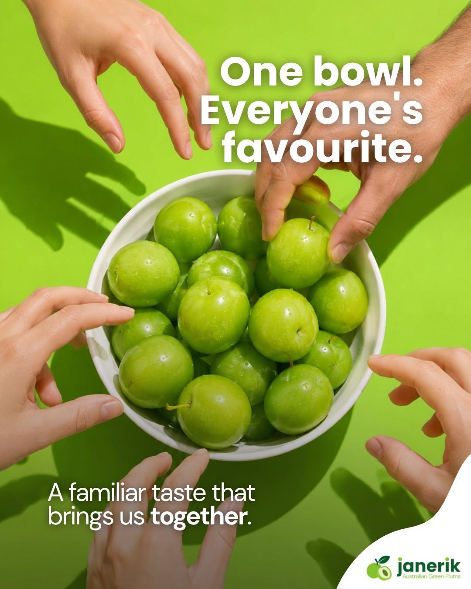

01
Sol at Luna: Music Cover
A personal music cover project where I explored vocal performance, recording, and audio production as a form of creative expression.
Date: August 30, 2026
Multimedia Student & Creative
Everything works out. Keep creating, keep learning, and keep moving forward.

Hi! I'm Yel, a fourth-year BA Multimedia Studies student who has loved multimedia since I was young, particularly video and visual storytelling. I currently work in marketing, where I am able to apply my creativity and multimedia skills to real projects.
As an ENFJ, I enjoy connecting with people, sharing ideas, and creating work with a meaningful purpose. I hope to continue developing my skills and use what I learn in multimedia to contribute positively to others and to society.
A collection of creative work across music, video editing, and visual design.
A personal music cover project where I explored vocal performance, recording, and audio production as a form of creative expression.
Date: August 30, 2026
A short-form UGC-style video editing project that combines product-focused footage, music, pacing, text, and visual storytelling for social media.
Date: October 9, 2026
A static visual design project created for a fresh produce campaign, using photography, typography, spacing, and visual hierarchy to present the subject in a clear and engaging way.
Date: August 3, 2026
